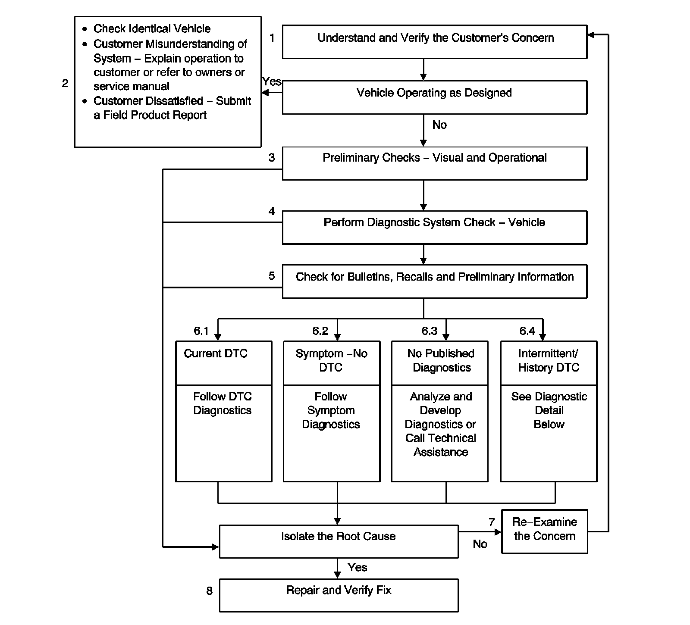

Strategy Based Diagnosis
Strategy Based Diagnosis
The goal of Strategy Based Diagnosis is to provide guidance when you create a plan of action for each specific diagnostic situation. Following a similar plan for each diagnostic situation, you will achieve maximum efficiency when you diagnose and repair vehicles. Although each of the Strategy Based Diagnosis boxes is numbered, you are not required to complete every box in order to successfully diagnose a customer concern. The first step of your diagnostic process should always be Understand and Verify the Customers Concern. The final step of your diagnostic process should be Repair and verify the Fix. Refer to the following chart for the correct Strategy Based Diagnosis.

1. Understand and Verify the Customers Concern: The first part of this step is to obtain as much information as possible from the customer. Are there aftermarket accessories on the vehicle? When does the condition occur? Where does the condition occur? How long does the condition last? How often does the condition occur? In order to verify the concern, the technician should be familiar with the normal operation of the system and refer to the owner or service manual for any information needed.
2. Vehicle Operating as Designed: This condition exists when the vehicle is found to operate normally. The condition described by the customer may be normal. Compare with another like vehicle that is operating normally under the same conditions described by the customer. Explain your findings and the operation of the system to the customer. If the customer is dissatisfied submit a Field Product Report.
3. Preliminary Checks: Conduct a thorough visual inspection. Review the service history. Detect unusual sounds or odors. Gather diagnostic trouble code (DTC) information in order to achieve an effective repair.
4. The Diagnostic System Check - Vehicle (Initial Inspection and Diagnostic Overview) verifies the proper operation of the system. This will lead the technician in an organized approach to diagnostics.
5. Check Bulletins, Recalls and Preliminary Information (PI).
6. Diagnostic categories:
1. Current DTC: Follow the designated DTC diagnostic in order to make an effective repair. Refer to Diagnostic Trouble Code (DTC) List - Vehicle (Diagnostic Trouble Code Descriptions) .
2. Symptom - No DTC: Select the appropriate symptom diagnostic. Follow the diagnostic steps or suggestions in order to complete the repair. Refer to Symptoms - Vehicle (Symptoms - Vehicle) .
3. No Published Diagnostics: Analyze the Concern. Develop a plan for the diagnostics. The service manual schematics will help you to see system power, ground, input, and output circuits. You can also identify splices and other areas where multiple circuits are tied together. Look at component locations to see if components, connectors or harnesses may be exposed to extreme temperature, moisture, or corrosives (road salt, battery acid, oil or other fluids). Utilize the wiring diagrams, system description.
4. Intermittent/History DTC: An intermittent condition is one that does not occur continuously, may be difficult to duplicate, and will only occur when certain conditions are met. Generally, an intermittent is caused by faulty electrical connections and wiring, malfunctioning components, electromagnetic/radio frequency interference, driving conditions, or aftermarket equipment. The following approaches/tools may prove to be beneficial in locating and repairing an intermittent condition or history DTC.
* Combining technicians knowledge with the available service information.
* Evaluate the symptoms and conditions described by the customer on the Customer Concern Verification Sheets (Initial Inspection and Diagnostic Overview) .
* Follow the suggestions on Testing for Intermittent Conditions and Poor Connections (Component Tests and General Diagnostics) .
* Use the available scan tool, digital multi-meter, or J 42598 with data capturing capabilities.
7. Re-examine the Concern: If a technician cannot successfully find or isolate the concern, a re-evaluation is necessary. Re-verify the concern. The concern could be an intermittent or normal condition.
8. Repair and Verify Fix: After isolating the root cause, make the repairs and validate for the correct operation by performing the Diagnostic Repair Verification (Verification Tests) . Verifying that the DTC or symptom has been corrected may involve road testing the vehicle.